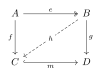

MetaEdward Kmett ·
Hello, World!
import qualified Control.Comonad as Comonad
import qualified Edward hiding (personal_details)
import Blog.Software
instance Blog Comonad.Reader where
url = "http://comonad.com/reader"
author = Edward.Kmett
main = forever $ post stuff
Syntax highlighting works.
Γ,x:τ⊢x:τvar
Γ⊢λx:σ.M:σ→τΓ,x:σ⊢M:τabs
Γ⊢MN:τΓ⊢M:σ→τΓ⊢N:σapp
Apparently, LATEX works.

Commutative diagrams, check.
All systems go.
World, meet blog; blog, meet world.